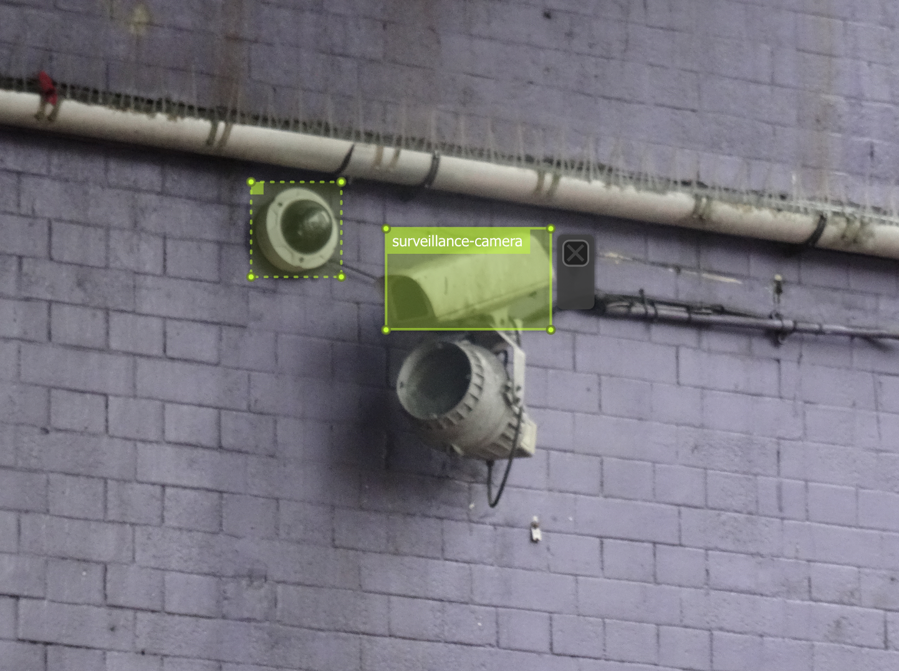

Note: this material is a work in progress.
In 2019, if you spend time in a major city (like Seattle) and spend any time online (like most of us do), chances are, you're almost constantly being watched. You probably know that, in a general way. But how exactly are you being watched, and what can you do about it?
This workshop is a hands-on introduction to identifying how you're being watched in daily life, as well as a conversation about our lived experiences with surveillance and how to change it. The goal is to cut through paranoia and hype: we will start with a presentation that aims to demystify both surveillance thinking and surveillance technology. We will then take a walk to learn to spot surveillance infrastructure in downtown Seattle and finish by splitting up to do deep dives in any areas of technical interest, such as facial recognition, artificial intelligence, online tracking, or securing your personal communications.
Afterward, the next time you go outside or online, you should have a much better idea of how you're being watched and how you can take action.
The workshop will run about two and a half hours:
If you can, please bring a camera or camera-equipped phone and a laptop.
Note: we are piloting this material, so things may change and we will ask participants for feedback!